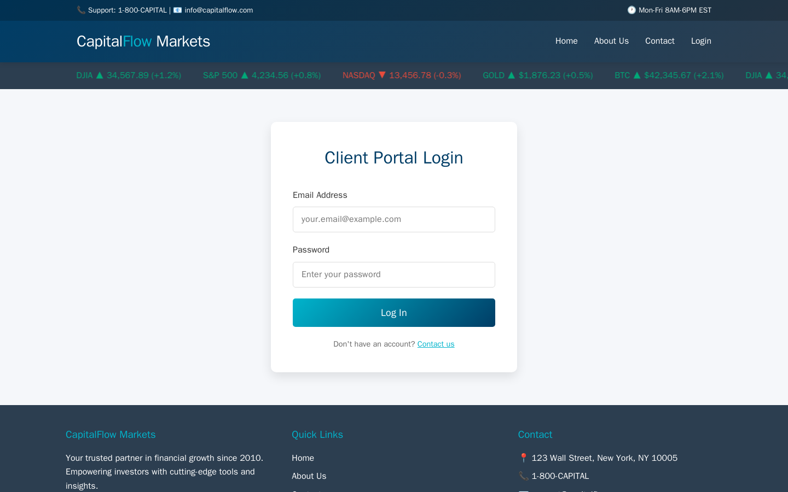
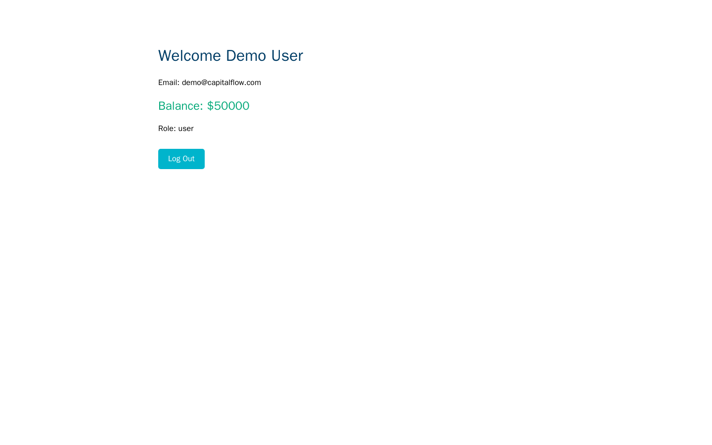

Exercise CF2.1: Login Bruteforce
Before You Begin
You should have completed both Chapter 1 exercises (CF1.1 and CF1.2) and read the Chapter 2 Introduction. The login endpoint and form field names you documented during reconnaissance are essential for this exercise. Your VPN must be connected and your terminal open before continuing.
Scenario
CapitalFlow Markets operates a staff authentication portal for employees and administrators. During your Chapter 1 reconnaissance, you identified the login endpoint and its form field structure. Sarah Chen (CTO) now wants you to test whether the login system enforces rate limiting or account lockout policies.
Your intelligence team has compiled a short list of likely credentials based on publicly available information: employee names from LinkedIn, the company's email format (user@capitalflow.com), and common password patterns observed in previous breaches of fintech companies. Your objective is to determine whether valid credentials can be discovered through credential stuffing and, if successful, assess what an authenticated attacker can access.
Target: capitalflow-auth.lab (port 80)
Credentials: admin@capitalflow.com / AdminPass123#

Your Objectives
- Identify the login endpoint and understand its request/response behavior
- Test manual authentication to establish baseline responses for success and failure
- Create a targeted wordlist for credential stuffing
- Use hydra to perform automated brute-force against the login endpoint
- Access the admin dashboard with discovered credentials
- Find and submit the flag in
OCR{...}format
Background: Credential Stuffing and Brute-Force Attacks
How Credential Attacks Work
Credential stuffing uses lists of known username/password pairs (often from previous data breaches) to test whether users reuse passwords across services. Brute-force attacks systematically try every combination from a wordlist. Both attacks exploit the same weakness: login endpoints that accept unlimited authentication attempts without rate limiting, account lockout, or CAPTCHA (Completely Automated Public Turing test to tell Computers and Humans Apart) challenges.
Why Rate Limiting Matters
A login endpoint that processes requests as fast as the network delivers them allows an attacker to test thousands of credentials per minute. Rate limiting restricts the number of login attempts per IP address or per account within a time window. Without rate limiting, even strong passwords are vulnerable to large wordlists given enough time.
Attack Tool: Hydra
Hydra is a parallelized login cracker that supports dozens of protocols. For HTTP form-based authentication, hydra sends POST requests with username/password combinations and checks the response for a success or failure indicator. The attacker provides a wordlist for usernames, a wordlist for passwords, and a string that appears only in failed login responses.
graph TD
A["Identify login endpoint<br/>and form fields"] --> B["Test one valid and<br/>one invalid login"]
B --> C["Note the failure<br/>response string"]
C --> D["Build username<br/>and password lists"]
D --> E["Run hydra with<br/>failure string filter"]
E --> F{"Credentials<br/>found?"}
F -->|"Yes"| G["Authenticate and<br/>explore dashboard"]
F -->|"No"| H["Expand wordlists<br/>and retry"]
style A fill:#4a90d9,color:#fff
style E fill:#e8a735,color:#fff
style G fill:#6aaa64,color:#fff
style H fill:#d9534f,color:#fffTool Primer: hydra
Hydra performs brute-force attacks against network services. For HTTP login forms, the syntax specifies the target host, the form endpoint, the POST data format, and the string that indicates a failed login.
Basic HTTP POST brute-force:
hydra -l admin@company.com -P passwords.txt <target> http-post-form "/login:email=^USER^&password=^PASS^:Invalid"
| Component | Meaning |
|---|---|
-l |
Single username to test |
-L |
File containing usernames (one per line) |
-p |
Single password to test |
-P |
File containing passwords (one per line) |
http-post-form |
Attack module for HTTP POST forms |
/login:... |
Path, POST body template, failure string (colon-separated) |
^USER^ |
Placeholder replaced with each username |
^PASS^ |
Placeholder replaced with each password |
Invalid |
String that appears in failed login responses |
Useful flags:
| Flag | Purpose |
|---|---|
-t 4 |
Number of parallel threads |
-V |
Verbose; show each attempt |
-f |
Stop after the first valid credential is found |
-s <port> |
Specify a non-default port |
Walkthrough
Step 1: Launch the Exercise
Open the platform in your browser and start the exercise environment.
- Navigate to Exercises and locate the CapitalFlow Markets track
- Find Login Bruteforce and click Launch
- Wait for the status to change to Running
- Note the target IP displayed in the Active Lab View
Step 2: Identify the Login Endpoint and Form Fields
Before launching any automated attack, you need the exact URL, HTTP method, and field names for the login form. Use the reconnaissance skills from Chapter 1.
Kali - Fetch the login page and inspect the form
Look for the <form> tag's action attribute (the URL where the form submits) and the name attributes on each <input> element. Common field names include email, username, password, and passwd. Record the action URL and field names; you will use them to construct the hydra command.
Step 3: Test a Valid Login to Establish the Success Response
Before testing invalid credentials, log in with the known credentials to see what a successful authentication looks like. The difference between success and failure responses is what hydra uses to distinguish valid credentials.
Kali - Log in with the known credentials
Read the response carefully. A successful login typically returns a redirect (HTTP 302), a welcome message, dashboard HTML, or a JSON response with a success indicator. Record the exact text or behavior that indicates success.
Step 4: Test an Invalid Login to Establish the Failure Response
Now test with credentials you know are wrong to see what a failed login looks like.
Kali - Test with invalid credentials
Look for the failure indicator in the response: an error message like "Invalid credentials," "Login failed," or "Incorrect email or password." Record the exact failure string; hydra needs this to distinguish failed attempts from successful ones.
Step 5: Create a Password Wordlist
Build a targeted wordlist based on common password patterns for a fintech company. Combine the company name, common words, years, and special characters.
Kali - Create a targeted password wordlist
The wordlist includes the known valid password among decoys. In a real engagement, you would use a much larger wordlist from breach databases, but a targeted list demonstrates the technique without excessive scan time.
Step 6: Create a Username Wordlist
Build a list of likely email addresses based on CapitalFlow's naming convention.
Kali - Create a username wordlist
Step 7: Run Hydra Against the Login Endpoint
Launch hydra with your wordlists and the failure string you identified in Step 4.
Kali - Run hydra bruteforce attack
Watch the output as hydra tests each combination. Each line shows the username and password being tried, along with the server's response status. When hydra finds valid credentials, the output highlights the successful combination. Record the discovered username and password.
The -f flag tells hydra to stop after finding the first valid pair. The -V flag shows every attempt so you can observe the brute-force process. The -t 4 flag limits parallelism to four threads, which is sufficient for this exercise.
Step 8: Access the Admin Dashboard
Use the discovered (or provided) credentials to authenticate and explore the admin dashboard.
Kali - Log in and follow redirects to the dashboard
Kali - Access the admin dashboard with the session cookie
Read through the dashboard HTML. Look for the flag in OCR{...} format, sensitive data, user lists, configuration details, or links to additional administrative pages. Explore every link you find.
Kali - Search the dashboard for the flag

Record Your Findings
Document the brute-force attack and its results below.
Login endpoint details:
Field Value URL Method Username field name Password field name Failure response string:
Hydra results:
Admin dashboard findings:
Flag:
Analysis Questions
1. The login endpoint accepted unlimited authentication attempts without delay or lockout. Name three server-side controls that could slow or stop a brute-force attack.
Reveal Answer
Rate limiting restricts the number of login attempts per IP address or per account within a time window (e.g., 5 attempts per minute). Account lockout disables the account after a threshold of failed attempts (e.g., 10 failures locks the account for 30 minutes). CAPTCHA challenges require human interaction after several failed attempts, blocking automated tools. Implementing all three provides defense in depth, because each control addresses a different bypass strategy.
2. Hydra uses a failure string to distinguish failed logins from successful ones. What would happen if the application returned the same response for both valid and invalid credentials?
Reveal Answer
Hydra would be unable to distinguish successes from failures, causing the attack to either report every attempt as valid or miss valid credentials entirely. Applications that return identical responses for valid and invalid logins make credential stuffing significantly harder. The attacker would need to rely on side-channel indicators such as response time differences, redirect behavior, or cookie presence to identify valid credentials, which requires more sophisticated tooling.
3. Why is credential stuffing often more effective than random brute-force, and what makes it particularly dangerous for financial services platforms?
Reveal Answer
Credential stuffing uses username/password pairs from previous breaches, exploiting the fact that many users reuse passwords across services. A random brute-force attack must guess both the username and password, while credential stuffing already has confirmed combinations that worked elsewhere. Financial services platforms are high-value targets because account access can lead to fund transfers, personal financial data exposure, and regulatory violations. A single compromised account on a trading platform can result in direct financial loss.
Key Takeaways
- Rate limiting is the primary defense against brute-force attacks; login endpoints that accept unlimited attempts allow automated tools to test thousands of credentials per minute
- Hydra automates HTTP form brute-force by substituting wordlist entries into POST request templates and filtering responses by a failure string
- Targeted wordlists combining company-specific terms with common password patterns are more efficient than exhaustive dictionaries, especially when the attacker has reconnaissance data about naming conventions
- Credential stuffing exploits password reuse and is more effective than random brute-force because it uses confirmed username/password pairs from previous breaches
- Account lockout, CAPTCHA, and rate limiting provide defense in depth when implemented together; any single control can be bypassed, but combining all three significantly raises the attacker's cost